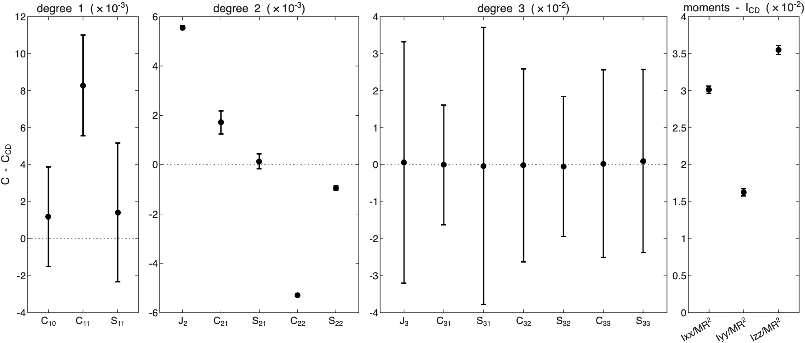
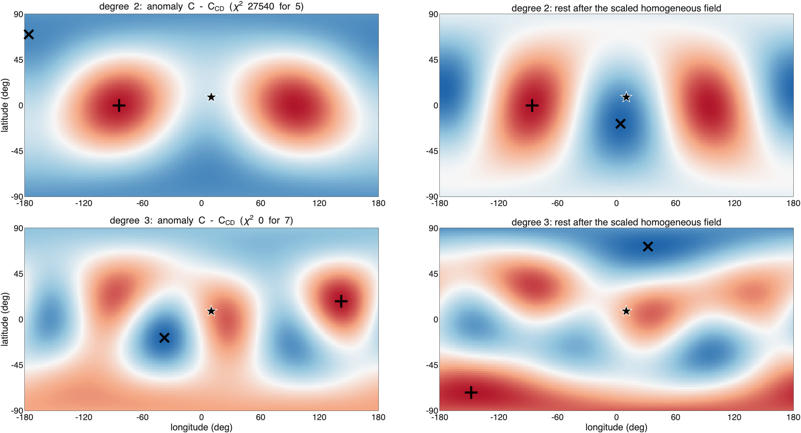
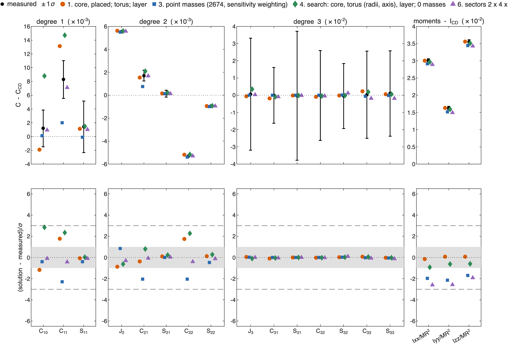
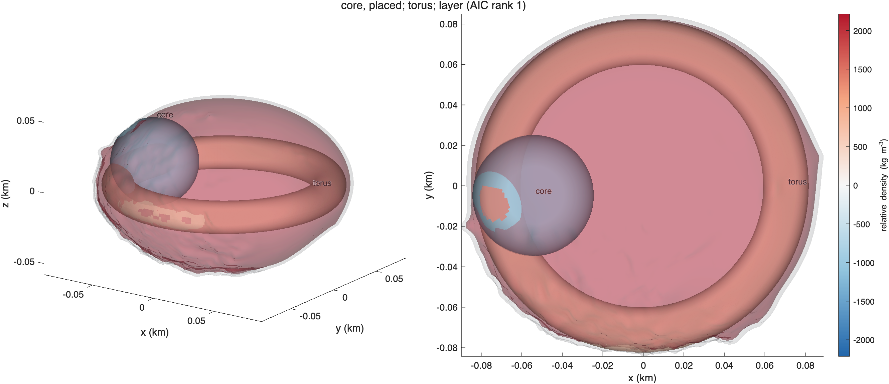
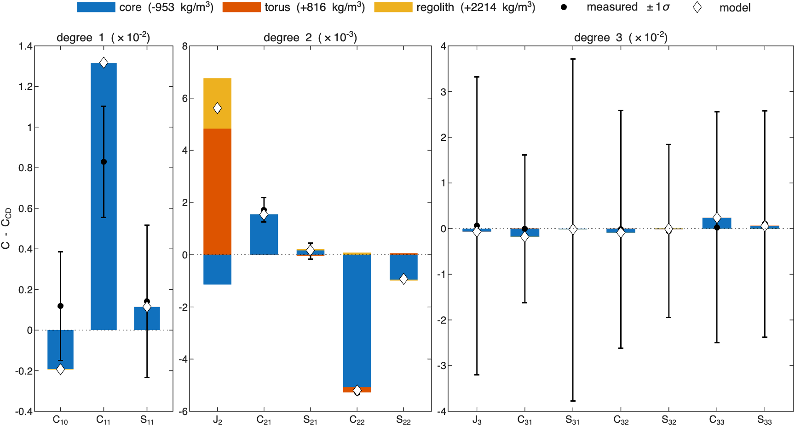
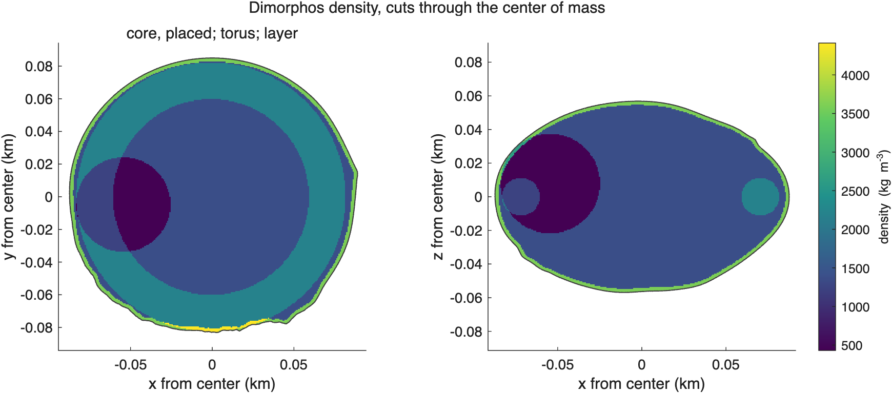
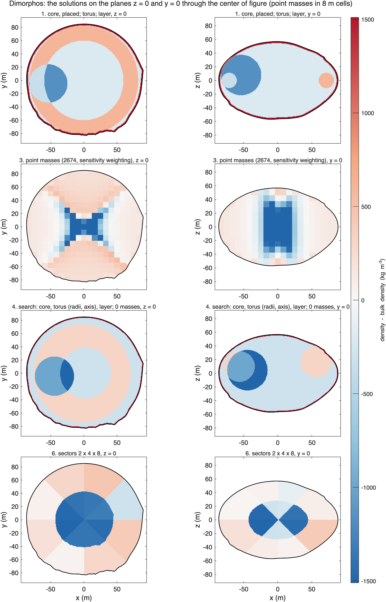
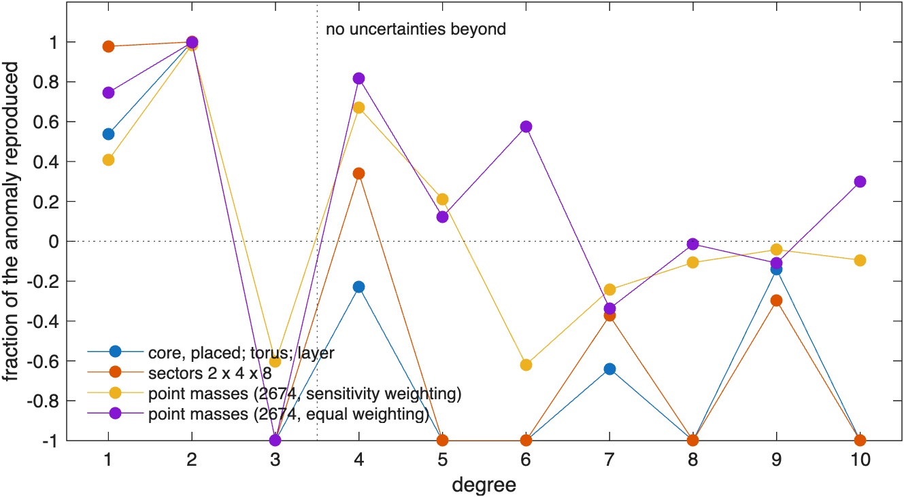
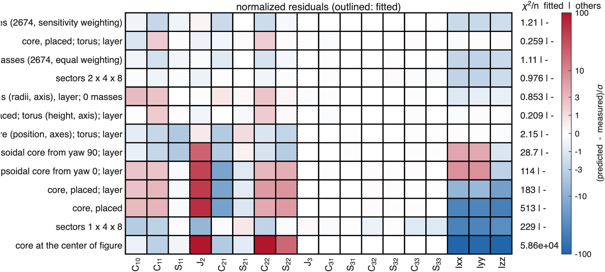
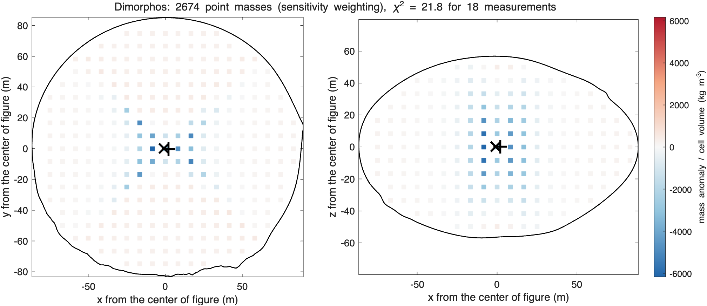

ROB-DATA6: Dimorphos#
Last edited October 27, 2026
In short. Mass is pushed outward and toward ±y: the moments of inertia are 30 to 60σ larger than constant density's, J2 is 79σ higher, and changes sign (−97σ). The best solution is a light core 54 m toward −x (−950 kg/m³), a dense torus about the spin axis (+820 kg/m³) and a dense crust (+2210 kg/m³): reduced χ² 0.39 with 6 parameters, far ahead of the smoothed solutions by AIC (17 against 33 to 35). It fits degree 2 and the moments, which is all Dimorphos is measured to; beyond, ROB's exact values show structure that none of the solutions has. At the GRASS surface point the smooth solutions predict the size of the acceleration better (0.1% to 1.6% off against 4% for the core model), and every solution, like constant density, is 2.5 to 3.7° off in direction: the material near the lander is not determined by the coefficients.
| Kind | Best solution of the kind | Parameters | Reduced χ² | p | AIC | Mean squared residual, degrees 1–3 | GRASS acceleration |
|---|---|---|---|---|---|---|---|
| components | light core toward −x; dense torus; dense crust | 6.0 | 0.39 | 0.97 | 16.7 | 0.57 | +4.1%, 3.0° |
| point masses | 2,674, sensitivity weighting | 5.5 | 1.73 | 0.05 | 32.7 | 0.99 | −1.6%, 2.6° |
| search | core, torus, layer | 9.0 | 1.71 | 0.08 | 33.4 | 1.32 | +3.9%, 3.7° |
| sectors | 2 × 4 × 8 | 8.5 | 1.86 | 0.05 | 34.6 | 0.03 | +0.9%, 2.6° |
The point masses with equal weighting give +0.05% and 2.5°, constant density −1.8% and 2.6°. (How to read these pages.)
1. What the measurements say#

C - C_CD 1-sigma sigma what it says
C11 8.287e-03 2.735e-03 3.0 center of mass toward +x
C20 -5.560e-03 7.069e-05 -78.7 J2 higher: mass toward the equator, away from the poles or the center
C21 1.716e-03 4.669e-04 3.7 mass toward +x in the north and -x in the south
C22 -5.286e-03 5.433e-05 -97.3 mass toward +-y more than +-x (elongation along y)
S22 -9.439e-04 8.767e-05 -10.8 mass toward longitudes -45 and 135 deg
Ixx 3.014e-02 4.882e-04 61.7 Ixx: mass farther from the x-axis
Iyy 1.626e-02 5.035e-04 32.3 Iyy: mass farther from the y-axis
Izz 3.551e-02 6.314e-04 56.2 Izz: mass farther from the z-axis- The moments of inertia are 62σ (Ixx), 32σ (Iyy) and 56σ (Izz) larger: mass farther from the center. Only the moments measure this directly; degree 2 holds their differences.
- J2 79σ higher: mass toward the equator. −97σ: the anomaly takes away more than the body's own elongation along x, toward ±y.
- The center of mass: 1.3 m toward +x, 3σ at this precision.
2. Where the mass is#

Center of mass 1.32 m from the center of figure toward lat 8, lon 10 (3 sigma): the anomalous mass is on that side (or a deficit on the other).
Degree 2 (chi-square 27540 for 5): second moment of the anomaly triaxial, values 0.55, -0.10, -0.45 of their spread.
axis toward (largest): lat +0 lon -85 and lat -0 lon 95, +-1 deg
axis middle: lat +19 lon 5 and lat -19 lon -175, +-4 deg
axis away from (smallest): lat +71 lon -175 and lat -71 lon 5, +-4 deg
mass moved toward the axis through lat +0 lon -85 and lat -0 lon 95 and away from the axis through lat +71 lon -175 and lat -71 lon 5.
Rest of degree 2 (without the scaled homogeneous field): triaxial, values 0.50, -0.00, -0.50.
mass moved toward the axis through lat +1 lon -86 and lat -1 lon 94 and away from the axis through lat +17 lon -176 and lat -17 lon 4.
Each degree on the sphere (strongest excess / strongest deficit; rest after the scaled homogeneous field):
degree 2 chi2 27540 for 5: excess lat +0 lon -84, deficit lat +70 lon -176; rest: excess lat +0 lon -86, deficit lat -18 lon +4- Degree 2 moves mass toward the ±y axis (longitudes −85° and 95°, ±1°) and away from an axis close to the poles (latitude ±71°): toward the equator and toward ±y.
- The moments, all larger: outward. A light center does both, and a denser outside.
- Degree 1: the center of mass toward +x: a light body on the −x side, or extra mass on +x.
So the model given to the fit was a core placed by its χ² profile along the offset (it went 54 m toward −x and became light), a torus about the z-axis for the equatorial excess, and a surface layer for the outward shift.
3. The solutions compared#

- The model with components matches every coefficient and moment within 2σ (its largest misfits and , 1.8σ).
- The point masses and the sector grids leave the moments 2 to 2.6σ too small: smoothed as much as the measurements allow, they do not push enough mass outward. The search's model misses the offset by 2.9σ in .
AIC solution kind params chi2/nu p AIC res^2 1-3 largest exact2-4 exact5-10
1 core, placed; torus; layer components 6.0 0.388 0.97 16.7 0.567 C11 -1.12 -2.82
2 core, placed; torus (height, axis); layer components 9.0 0.419 0.93 21.8 0.527 C11 -0.82 -2.57
3 point masses (2674, sensitivity weighting) point masses 5.5 1.73 0.05 32.7 0.993 C11 0.35 -0.15
4 search: core, torus (radii, axis), layer; 0 masses search 9.0 1.71 0.082 33.4 1.32 C10 -1.30 -1.03
5 point masses (2674, equal weighting) point masses 6.8 1.78 0.05 33.5 0.345 C11 0.26 0.09
6 sectors 2 x 4 x 8 sectors 8.5 1.86 0.05 34.6 0.0334 C11 -2.25 -1.41
7 ellipsoidal core (position, axes); torus; layer components 9.0 4.31 1.3e-05 56.8 3.76 S11 -1.18 -2.34
8 ellipsoidal core from yaw 90; layer components 8.0 51.7 1e-104 533.0 30.1 C20 -1.33 -1.70
9 ellipsoidal core from yaw 0; layer components 8.0 205 0 2061.4 98.7 C20 -2.43 -2.63
10 core, placed; layer components 5.0 254 0 3308.0 135 C20 -1.43 -0.42
11 sectors 1 x 4 x 8 sectors 15.5 1.65e+03 0 4145.1 5.07 C20 -248.52 -125.16
12 core, placed components 4.0 660 0 9248.1 218 C20 -1.68 -0.37
13 core at the center of figure components 1.0 6.2e+04 0 1054299.9 2.27e+03 C20 -0.93 -0.42
Ordered by AIC = chi2 + 2 x params (Akaike information criterion: the fit with a penalty for every parameter; lower is better).4. The best solution: a light core, a dense torus and a dense crust#

component type center - cof (m) dist m lat lon drho kg/m^3 rho mass kg makes most of (sigma)
core sphere [ -54 -5 8] 54 8 -175 -953 +- 371 430 -1.07e+08 C22 -93, C20 +16, S22 -11
torus torus [ 0 0 0] R 71 a 11 tilt 0.0 0 0 0 816 +- 66 2199 1.45e+08 C20 -68, C22 -4, S22 +1
regolith layer 0 to 2 m deep NaN NaN NaN 2214 +- 345 3597 3.35e+08 C20 -27, C22 +2, S22 -0
background 1383 kg/m^3 (bulk 1594); makes most of: the component's share of each coefficient in units of its 1-sigma
Why each component is where it is, and dense or light:
- The light core (−950 ± 370 kg/m³, 54 m toward −x, 430 kg/m³ in all) makes nearly all of the change of (−93σ): mass missing on the x-axis is the same, in degree 2, as mass added along y. Being on the −x side, it moves the center of mass toward +x.
- The dense torus (+816 ± 66 kg/m³) puts mass in the equatorial plane: J2 higher (−68σ in ).
- The dense crust (+2210 ± 350 kg/m³, about 2 m thick: 3600 kg/m³) adds to J2 (−27σ) and, with the torus, carries the larger moments: mass outward.

5. The solutions side by side#

solution (AIC rank) moved (% M) excess at (m) deficit at (m)
1. core, placed; torus; layer 5.90 [6 -1 -1] [-14 -1 2]
3. point masses (2674, sensitivity weighting) 10.78 [2 -0 0] [-1 0 0]
4. search: core, torus (radii, axis), layer; 0 masses 6.67 [7 -0 10] [-13 -1 -4]
6. sectors 2 x 4 x 8 9.12 [13 3 0] [2 2 -1]
correlation of the cells of each pair:
1 3 4 6
1 1.00 0.12 0.62 0.23
3 0.12 1.00 0.22 0.47
4 0.62 0.22 1.00 0.37
6 0.23 0.47 0.37 1.00
moved: the mass above the bulk density M/V (equal to the mass below it), in 8 m cells; excess at, deficit at: where that mass is centered, from the center of figure.All four make the interior lighter and the outer part denser, and move more mass than in any other package (5.9% to 10.8% of M): what the larger moments say. The model with components and the search's model are alike (correlation 0.62): a light core toward −x (their deficit centered 13 and 14 m toward −x), a dense ring in the equatorial plane around it and a dense crust. The point masses and the sector grid (correlation 0.47 with each other, 0.12 to 0.37 with the models with components) keep the light part at the center of figure, the point masses as a narrow column along the spin axis, the sector grid as its inner sectors, and make the outer part denser toward ±y, which asks for. Light inside and dense outside is common to all; that the light part is off center toward −x, as the 3σ center-of-mass offset suggests, comes from the models with components only.
6. Independent check: the GRASS surface point#
surface point [85.4 7.5 12.0] m; every model consistent with the coefficients and inertia, and the best of each kind
U (m^2/s^2) |a| (m/s^2) |a| vs % angle deg
given 2.329658e-03 3.176463e-05 0.000 0.000
homogeneous 2.303306e-03 3.119500e-05 -1.793 2.638
1. point masses (2674, sensitivity weighting) 2.303906e-03 3.126095e-05 -1.586 2.584
2. core, placed; torus; layer 2.369193e-03 3.306649e-05 4.098 3.002
3. point masses (2674, equal weighting) 2.315576e-03 3.178047e-05 0.050 2.526
4. sectors 2 x 4 x 8 2.326433e-03 3.205818e-05 0.924 2.644
5. search: core, torus (radii, axis), layer; 0 masses 2.380418e-03 3.300662e-05 3.910 3.727
6. core, placed; torus (height, axis); layer 2.380386e-03 3.390141e-05 6.727 2.665The surface point is 86 m toward +x. Constant density predicts 1.8% too little acceleration there and 2.6° off in direction. The smoothed solutions predict the size best (point masses with equal weighting +0.05%, sector grid +0.9%); the models with a light core and a dense crust give +3.9% to +6.7%: their crust is too dense near this point. Every solution stays 2.5° to 3.7° off in direction, as constant density is (2.6°): the coefficients and the moments do not constrain the material near the lander, and on DATA6 the surface point does not confirm the best model by AIC.
7. Beyond the fitted coefficients#
model fitted to chi2/nu chi2/n fitted chi2/n others
core, placed; torus; layer degrees 1-2 0.928 0.422 0.00302
core, placed; torus; layer degrees 1-3 0.388 0.259 -
sectors 2 x 4 x 8 degrees 1-2 2.85 0.598 0.00495
sectors 2 x 4 x 8 degrees 1-3 1.86 0.976 -
point masses (2674, sensitivity weighting) degrees 1-2 2.21 1.01 0.000737
point masses (2674, sensitivity weighting) degrees 1-3 1.73 1.21 -
point masses (2674, equal weighting) degrees 1-2 2.42 0.828 0.00122
point masses (2674, equal weighting) degrees 1-3 1.78 1.11 -
Fraction of each degree's anomaly (exact values) reproduced by the fit to every degree, 1 - |model - given|^2/|given|^2:
model 1 2 3 4 5 6 7 8 9 10
core, placed; torus; layer 0.54 1.00 -4.12 -0.23 -1.63 -3.79 -0.64 -5.58 -0.14 -5.13
sectors 2 x 4 x 8 0.98 1.00 -8.10 0.34 -3.44 -1.30 -0.37 -1.39 -0.30 -1.65
point masses (2674, sensitivity weighting) 0.41 0.99 -0.60 0.67 0.21 -0.62 -0.24 -0.11 -0.04 -0.09
point masses (2674, equal weighting) 0.75 1.00 -1.05 0.82 0.12 0.58 -0.34 -0.01 -0.11 0.30
Every solution reproduces degree 2 of ROB's exact values (99–100%) and none reproduces degree 3 (negative fractions): the true interior has structure at those scales that a model fitted to degree 2 and the moments cannot know. With better measurements the model would have to be extended; at the Hera precision it is truncated at degree 2.
8. Details#

